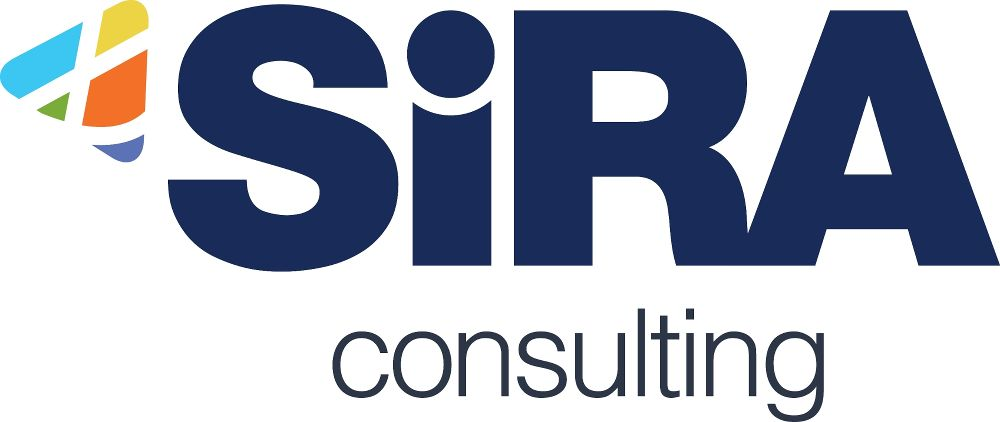

Education
-
University of Houston Houston, TX - Aug 2021 - Dec 2022
Master of Science in Data Science, Specialization in Computer Science
Work Experience
-
Florida Department of Elder Affairs, Tallahassee, FL Apr 2023 - Current
Data Science Analyst/Government Consultant I
- Developed and optimized complex SQL queries and stored procedures using SSMS, SSRS and Python for analyzing a database with over 8 million records resulting in a 30% improvement in query performance.
- Created interactive and visually appealing reports using SSRS, Tableau and Alteryx, designing over 70 comprehensive reports that provided actionable insights to stakeholders, leading to a 25% increase in data-driven decisions.
-
Sira Consulting, Houston, TX Jan 2023 - Mar 2023
Data Engineer Intern I
- Developed and optimized complex SQL queries and stored procedures using SSMS, SSRS and Python for analyzing a database with over 8 million records resulting in a 30% improvement in query performance.
- Created interactive and visually appealing reports using SSRS, Tableau and Alteryx, designing over 70 comprehensive reports that provided actionable insights to stakeholders, leading to a 25% increase in data-driven decisions.
-
University of Houston, TX Aug 2022 - Dec 2022
Graduate Teaching Assistant
- Hosted Data Science Teams meetings every 2 weeks, consists of 2 consecutive days to educate approximately 110 students on techniques and innovations in Data Science, AI, and Machine Learning at University of Houston.
- Coordinated networking events and data science projects to increase interest for students in data science.
-
Forge Consulting Pvt Ltd, India Jan 2019 - Jun 2021
Data Scientist
- Utilized SQL, built ETL (Extract, Transform, Load) pipelines for diverse datasets resulting in a 40% reduction in processing time. Employed advanced data cleaning techniques to ensure the accuracy and integrity of the data, eliminating inconsistencies leading to a 15% increase in targeted segments. Implemented Python libraries such as pandas, NumPy, and scikit-learn to perform advanced data analysis, statistical modeling, and predictive analytics tasks.
- Applied statistical analysis and machine learning algorithms to identify cost-saving opportunities using predictive models, reducing procurement costs by 18% and improving efficiency.
-
Forge Consulting Pvt Ltd, India Dec 2017 - Dec 2018
Data Analyst
- Developed story telling dashboards in Tableau Desktop and Power BI using Stack bars, bar graphs, scattered plots. Performed forecasting and demand analysis. Enhanced data collecting and processing methods. Documented functional requirements based on the requirements outlined by the business.
- Developed database objects, including tables, views, and materialized views using SQL. Created ad hoc reports using Tableau, Alteryx and MS Excel.
- Azure Fundamentals - Jan 2024
- Power BI for Users, Computer Tutors - Jun 2023
- Tableau Desktop Associate Certification - Dec 2022
- Dean’s Scholarship, University of Houston, Houston, TX - Aug 2021 to Dec 2022
- Hosted Data Science Teams meetings every 2 weeks, consists of 2 consecutive days to educate approximately 110 students on techniques and innovations in Data Science, AI, and Machine Learning at University of Houston.
- Coordinated networking events and data science projects to increase interest for students in data science.
- Administered 50 Student exams and provided guidance.
-
Programming Languages
Python, R, SQL, MATLAB -
Databases
RDBMS, Advanced SQL,SQL Server, PostgreSQL, Oracle SQL DB -
Cloud Computing/Data warehouse
AWS S3, Azure, Snowflake -
Data Analytics and Visualisation tools
Python pandas, Matplotlib, Seaborn, Tableau, PowerBI, Alteryx, ArcGIS -
Machine Learning
Regression, Classification and Ensemble algorithms, Clusters, Feature engineering, Hyperparameter Tuning, Model Optimisation,Algorithms (KNN, Decision Trees, SVM, Logistic Regression, Boost, Gradient Descent) -
Libraries
Pandas, Numpy, PyTorch, Seaborn, Matplotlib, Scikit-learn, TensorFlow, PySpark -
MS Office tools
Microsoft office 365,Excel, Powerpoint, Project, Word -
Tools
Tableau, Power BI, Alteryx, ArcGIS, ArcMap, ArcGIS Online, and ArcGIS Pro, Python, R, SAS, SQL, SPSS, SSRS, SSMS, ETL, AWS, Azure, Google-Earth, Jupiter notebook, MATLAB -
Microsoft Certified Azure Fundamentals Jan 2024
-
Building Powerful Generative-AI apps by LinkedIn Jan 2024
-
Power BI for Users, Computer Tutors Jun 2023
-
Tableau Desktop Associate Certification Dec 2022
Honors and Certifications
Leadership Experience
Department Of Data Science – University of Houston, Houston, Tx
Graduate Teaching Assistant Aug 2022 - Dec 2022
Center for Academic Support and Assessment, Houston, Tx
Student Associate Proctor Feb 2022 - May 2022